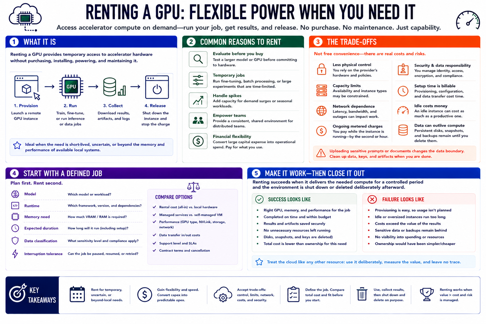

Why Rent GPUs?
Connecting to LMS... Progress: in progress

Narration
Renting a GPU provides temporary access to accelerator hardware without purchasing, installing, powering, and maintaining it. A user can provision a remote machine, run a model or data job, collect the results, and release the resource. This is valuable when the requirement is short-lived, uncertain, or beyond the memory and performance of available local systems.
Common reasons include evaluating a larger model before buying hardware, completing a temporary fine-tuning or batch-processing job, absorbing a demand spike, and giving a distributed team access to a consistent environment. Rental also converts a large capital purchase into operational spending. That flexibility is useful when utilization would be too low to justify ownership or when the required GPU type may change between projects.
The trade is not free convenience. The renter gives up some physical control and accepts provider capacity limits, network dependence, ongoing metered charges, and responsibility for cloud identity, access, and data handling. Setup time is billable. An idle instance can cost as much as a productive one. Uploading sensitive prompts or documents changes the data boundary, and persistent disks or snapshots can outlive the compute session.
Begin with a defined job: model, runtime, memory need, expected duration, data classification, and acceptable interruption. Compare the complete rental cost with local capacity and managed alternatives. Renting succeeds when it delivers the needed compute for a controlled period and the environment is shut down or deleted deliberately afterward. It fails when provisioning is easy enough that ownership, cost, and residual data become invisible.